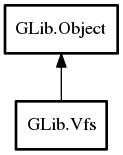

Vfs
Object Hierarchy:

Description:
public class Vfs :
Object
Entry point for using GIO functionality.
Content:
Static methods:
Creation methods:
Methods:
- public virtual void add_writable_namespaces (FileAttributeInfoList list)
- public virtual File get_file_for_path (string path)
- public virtual File get_file_for_uri (string uri)
- public virtual unowned string[] get_supported_uri_schemes ()
Gets a list of URI schemes supported by
this.
- public virtual bool is_active ()
Checks if the VFS is active.
- public virtual void local_file_add_info (string filename, uint64 device, FileAttributeMatcher attribute_matcher, FileInfo info, Cancellable? cancellable = null, void* extra_data = null, DestroyNotify? free_extra_data = null)
- public virtual void local_file_moved (string source, string dest)
- public virtual void local_file_removed (string filename)
- public virtual bool local_file_set_attributes (string filename, FileInfo info, FileQueryInfoFlags flags, Cancellable? cancellable = null) throws Error
- public virtual File parse_name (string parse_name)
This operation never fails, but the returned object might not support
any I/O operations if the parse_name cannot be parsed by the Vfs module.
Inherited Members:
All known members inherited from class GLib.Object